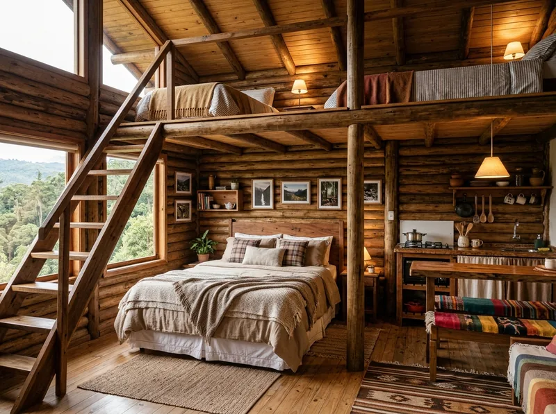
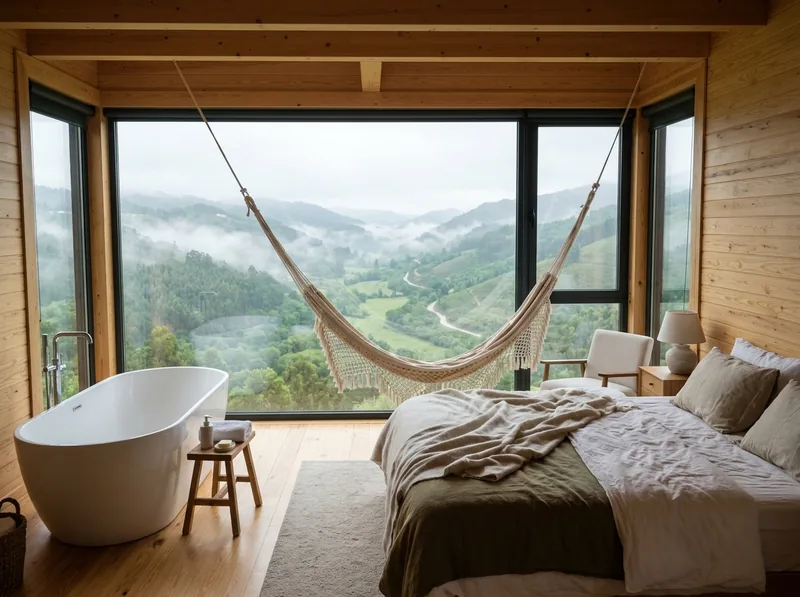
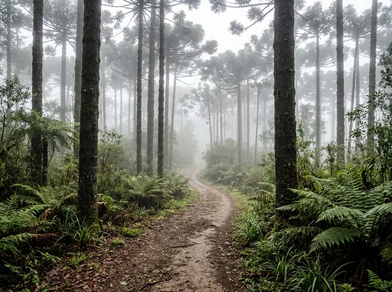
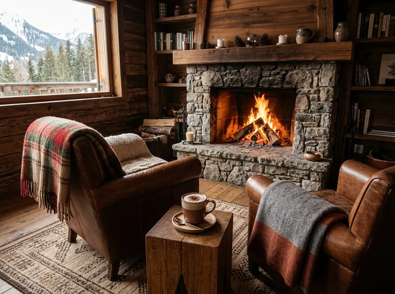
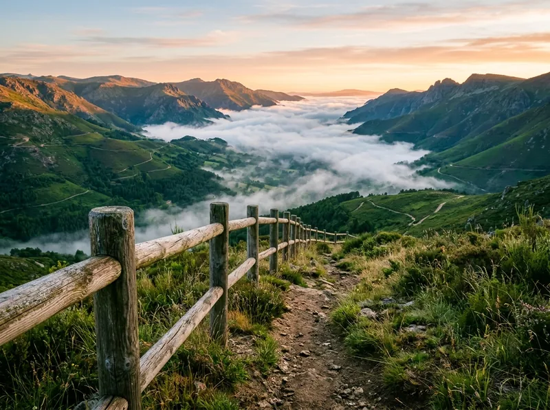

Pousada na serra · 6 chalés
Clima de montanha, lareira e café colonial
Atendimento rápido pelo WhatsApp e café da manhã incluso.
Ver acomodaçõesSobre a pousada
Seis chalés de madeira entre araucárias, com lareira, café colonial servido na varanda e trilhas que começam no nosso portão. Ideal para casais que querem desacelerar no fim de semana.
14hCheck-in
12hCheck-out
PixSinal de 30% para confirmar
3xsem juros no cartão
Acomodações

Chalé Família
Mezanino, 2 camas extras, cozinha compacta
R$ 380/ noite com café
Consultar pelo WhatsApp
Comodidades
- Café colonial
- Lareira nos chalés
- Trilhas guiadas
- Wi-Fi
- Estacionamento
- Pet friendly
Galeria




Como chegar
Estrada da Serra, km 8 · 15 min do centro (endereço ilustrativo)